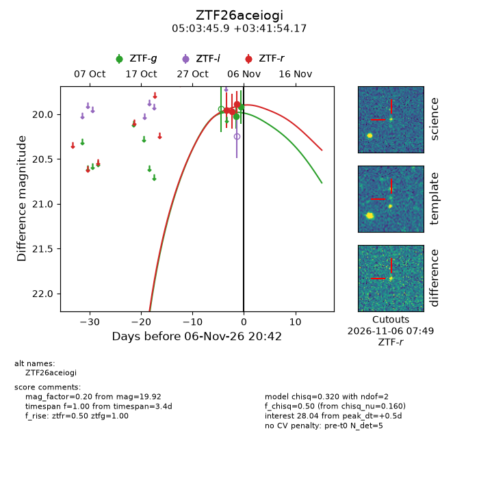
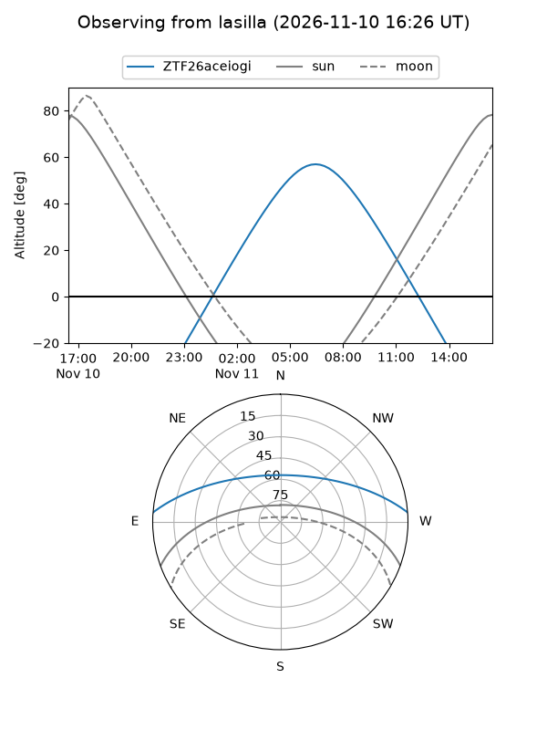
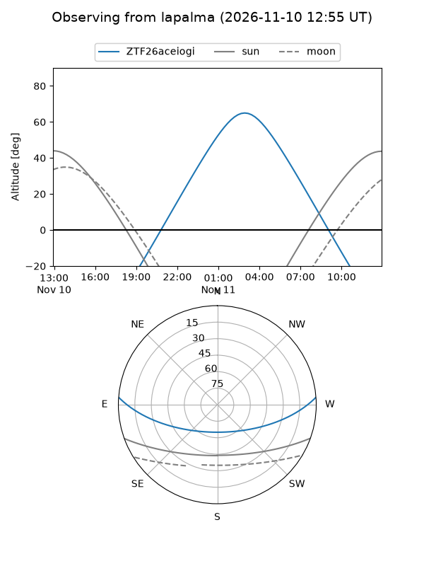
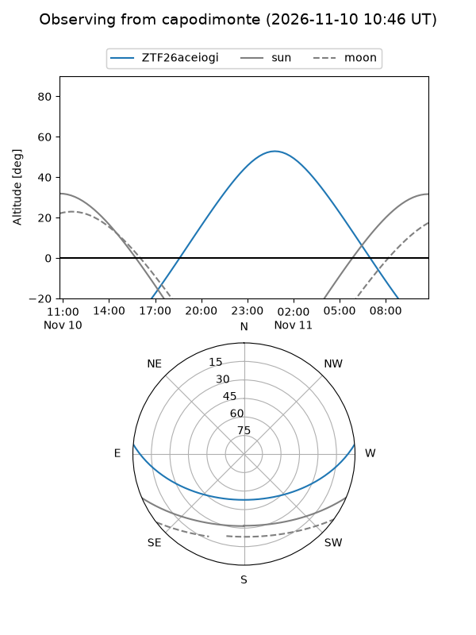
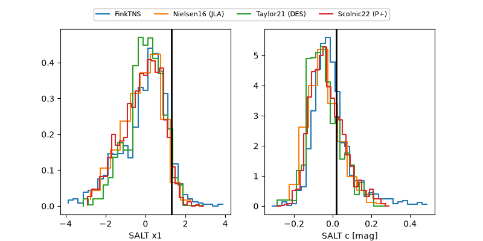

ZTF26aceiogi
Target ZTF26aceiogi at 2026-11-06 20:44
Aliases and brokers:
FINK-ZTF: ztf.fink-portal.org/ZTF26aceiogi
Lasair-ZTF: lasair-ztf.lsst.ac.uk/objects/ZTF26aceiogi
ALeRCE-ZTF: alerce.online/object/ZTF26aceiogi
Direct TNS query: direct search
alt names
ZTF26aceiogi (ztf,fink_ztf)
Coordinates:
equatorial (ra, dec) = 75.9410,+3.69838
equatorial (HMS+DMS) = 05:03:45.85,+03:41:54.17
galactic (l, b) = (196.4413,-21.88006)
Flags:
peak dt: +0.5
Photometry:
last ztfg=19.92, ztfr=19.89
2 ztfg, 3 ztfr detections
Lightcurve

Visibility



Additional plots
